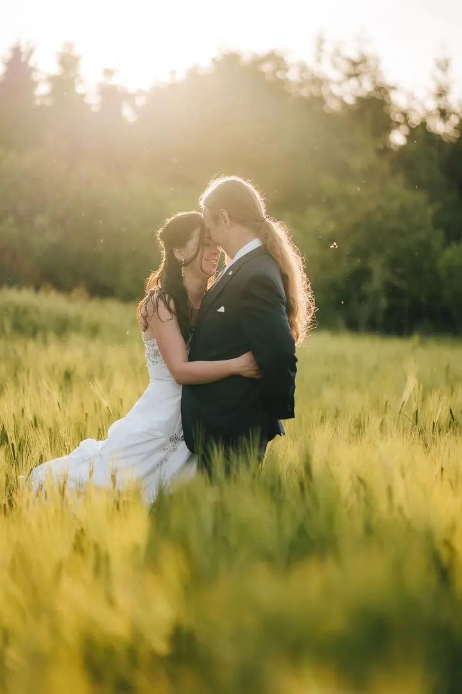
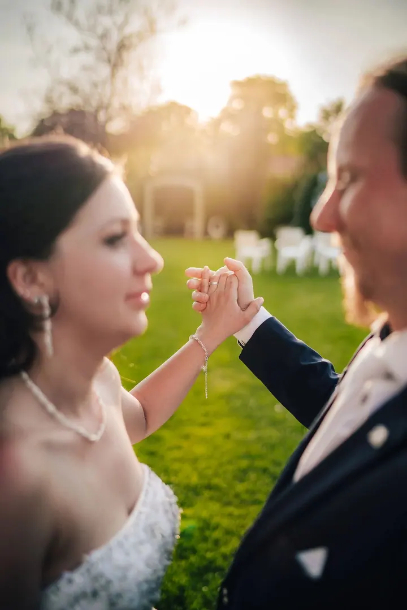
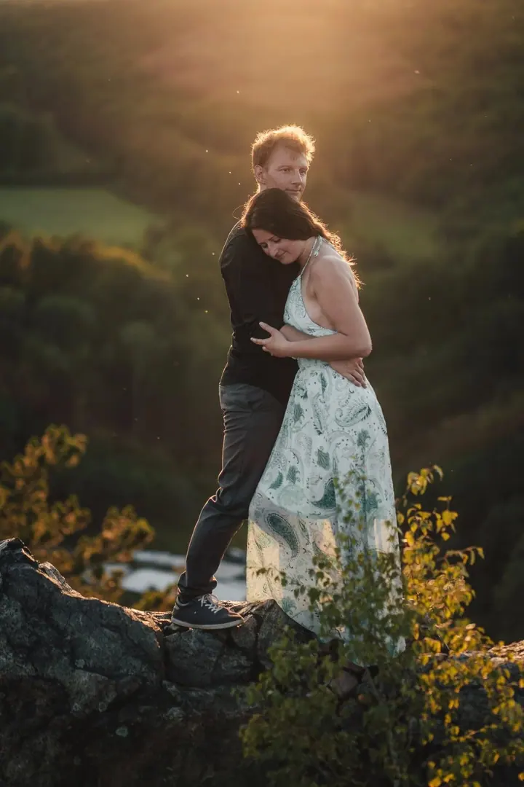
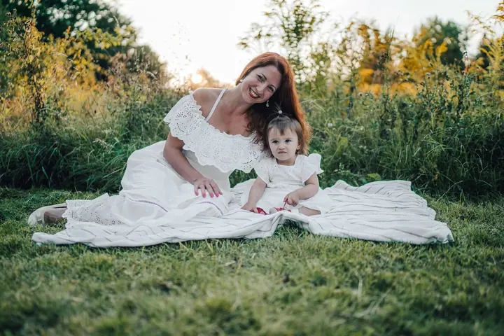

jedna
Svatební focení
Na svatbě se snažím splynout s hosty a být „neviditelný“, ale přitom zaznamenat vše podstatné. Vyberete si variantu basic na 3 až 4 hodiny, nebo celý den od příprav až po večerní párty.

Svatební a rodinný fotograf · Praha, Praha 6 – Břevnov, mimo Prahu po domluvě

Jmenuji se Tomáš Tůma a fotím svatby, páry i rodiny s dětmi v Praze a po domluvě i jinde. Každé focení beru jako pohodové přátelské setkání, ze kterého si odnesete krásnou vzpomínku.
Více o mně
Co fotím
jedna
Na svatbě se snažím splynout s hosty a být „neviditelný“, ale přitom zaznamenat vše podstatné. Vyberete si variantu basic na 3 až 4 hodiny, nebo celý den od příprav až po večerní párty.
dvě
Půjdeme se spolu projít do přírody nebo do parku a já budu fotit přirozené momentky. Hodí se jako předsvatební focení i jen tak pro vás dva.
tři
Focení v exteriéru na 1 až 2 hodiny, ze kterého dostanete 30 upravených fotek ve virtuální galerii. Žádné strojené pózy, hlavně pohoda a skutečné emoce.
Nafotím váš vůz zvenku i uvnitř. Fotím i produkty a nemovitosti, tam vám připravím kalkulaci na míru.
Nejlepší fotky vznikají na procházce přírodou.

Za objektivem
Nejsem zastáncem strojených, aranžovaných fotek. Nejdůležitější jsou pro mě přirozené emoce, protože takové fotky toho pak řeknou nejvíc.
Nejlepší fotky podle mě vznikají venku. Půjdeme se spolu projít do přírody nebo do parku, budeme si povídat a já mezitím zachytím momentky, které nikdo nenaaranžoval.
Na svatbách se snažím splynout s hosty a být „neviditelný“. Přitom zaznamenám vše podstatné a vytvořím pro vás reportáž z celého vašeho velkého dne. Sídlím v Praze 6 v Břevnově, ale za vámi rád přijedu i mimo Prahu.
Tomáš
Pošlete mi zprávu s datem a místem focení. Ozvu se vám a domluvíme se, co si představujete.
Termín závazně potvrdíte zálohou. U svatby se ještě předem potkáme na předsvatební schůzce a projdeme celý den.
Bez strojených póz a v klidu. Na svatbě se držím v pozadí, při ostatním focení se spolu projdeme přírodou nebo parkem.
Upravené fotky vám pošlu ve virtuální galerii, kde si je stáhnete v plném rozlišení pro tisk i ve zmenšené verzi na sociální sítě.
Portfolio
Otázky
Ano. Ceny platí pro focení v Praze, mimo Prahu k nim připočítám cestovné 8 Kč za kilometr.
Termín je závazný po zaplacení zálohy. U svatby je záloha 3 000 Kč, u ostatních focení 500 Kč.
U svatby basic minimálně 150 až 200 upravených fotek, u celodenní svatby 300 až 400. Při rodinném, párovém nebo portrétním focení dostanete 30 fotek. Počty jsou orientační a záleží na domluvě.
Ano, mám k dispozici dva fotoaparáty Polaroid Go. Půjčuji je jen k focení, kde jsem přítomný jako fotograf. Na místě vám ukážu, jak s nimi zacházet, a dál už fotíte sami.
Ano, nabízím dárkové poukazy na jakékoli focení v libovolné hodnotě od 500 Kč. Uplatnit je jde kdykoli během roku.